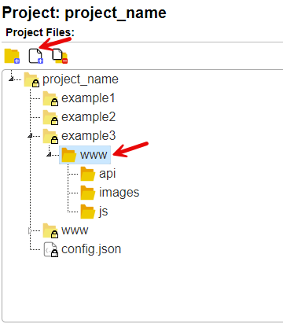
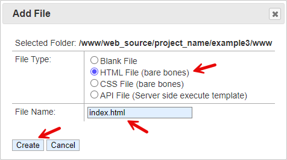
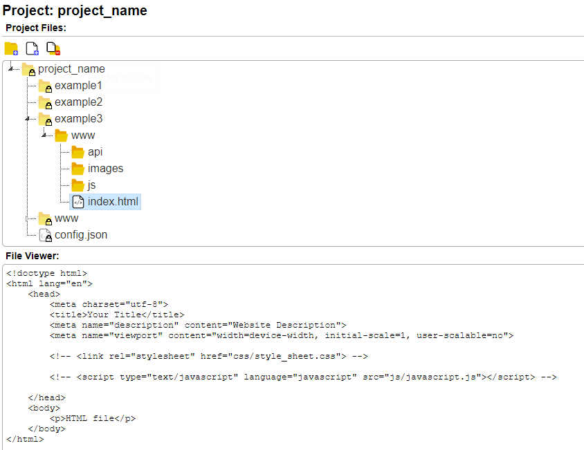

Creating Files
Select the folder in the 'www' folder tree and then click the 'Add File' button.

The 'Add File' dialog box has some basic file templates as shown in the dialog for 'File Types'. You can create a blank file, a bare bones HTML document, CSS with some basics, and an API file that is compatible with this system.

A basic HTML file is created. When selecting it, the file viewer will load the contents for a quick look.
